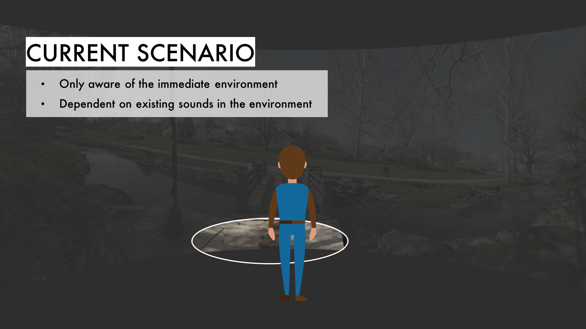
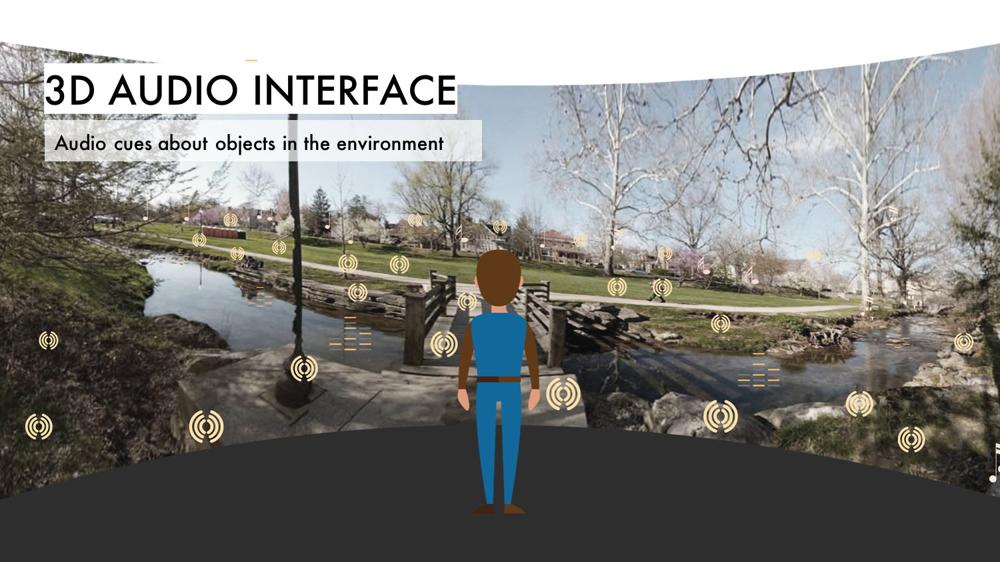
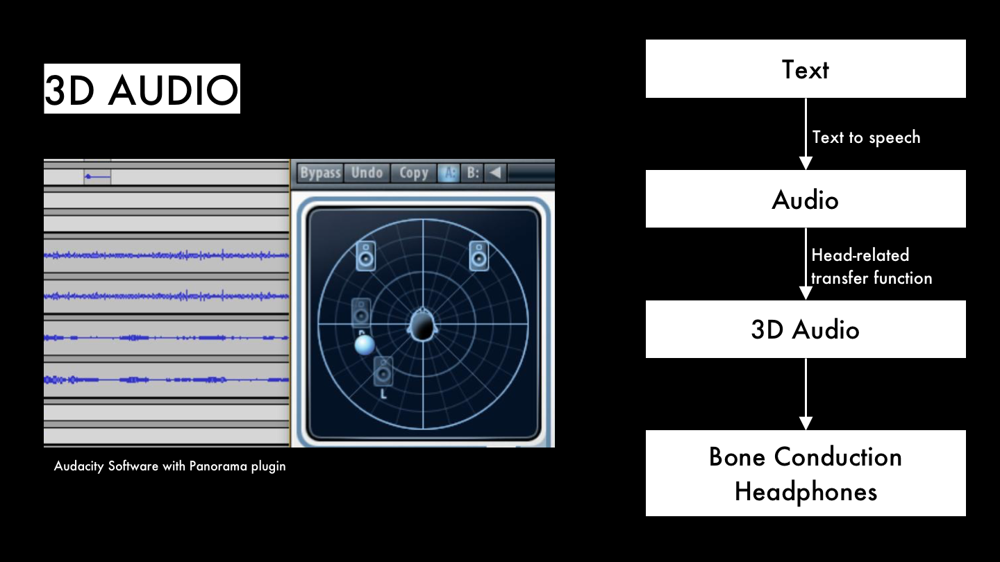

Duration: Aug'17 - Present
Overview: Current audio-based navigation technologies for visually impaired people focus on providing function and purpose-oriented information (objects, distances or navigation directions). We aim to go beyond such functional perspectives by creating explorative experiences, enabling them to enjoy their surroundings and wander as they aesthetically appreciate.
The project was done as a part of in a team of 3. My major contribution in the project was: User research : conduction user research to understand blah Conceptualisation Prototyping User testing with non-visually impaired participants.
A lot of technologies for visually impaired is focussed on providing functional navigation from point A to point B. But, explorative technology is an important for them to develop a spatial understanding.
If bus driver drops at you a wrong spot. How do you find what's around you or what you can access to… basically be able to navigate to where you need to get to. - Testing Participant
Most of the current technologies ignore the significance of spatial awareness that is required for sense making before one can navigate.
In the absence of visual cues, the visually impaired depend on audio cues to understand the world around them. However, not everything in the environment makes a sound or is audible. With the 3D Audio Interface, the visually impaired can hear audio cues about any object in the environment. In addition, they also learn approximately how far an object is and the near accurate direction in which the object is. With this interface, there can be a better understanding of not only people, but also static objects in the environment.
 Most of the digital audio that we currently listen to is one dimensional. It does not give you a sense of orientation or depth. But real world audio/ sounds are much better in conveying a sense of depth, orientation, distance, frequency, etc.
For prototype we took a picture of a spot in the campus and made a 3D audio using the the audacity software with panorama plugin.
This was a really new area for us. We hadn't played around much with. Listen to the audio, explain the scene and tells us which location is this in the campus?
One of the aim of this testing was to figure out if this is something that will be helpful for them.
This was just a start of exploration of what a spatial/ 3D audio could mean for visually impaired. The prototype was generated manually using a picture. There are a lot of questions that still need to be answered such as what happens if person if not standing but moving.
An interface such as this can be useful not just for the visually impaired but in AR interfaces where spatial sound can be used to create a scene or to direct a players attention. Additionally in an AR dashboard spatial notification sound car direct person's attention towards that interface.
{kind=link}
{kind=link}
{kind=link}